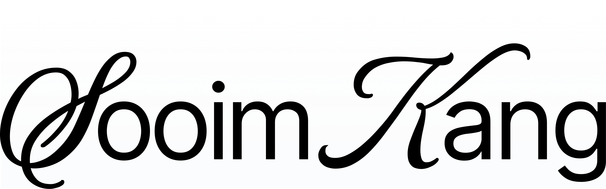
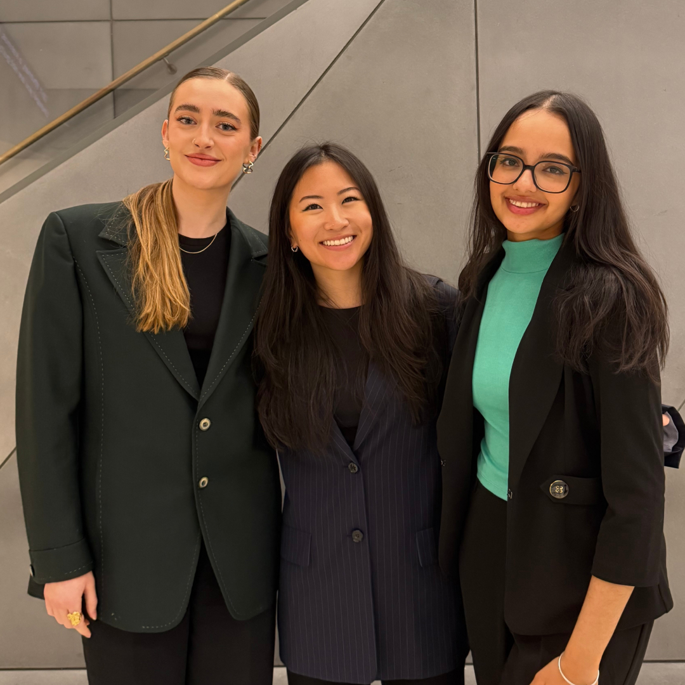
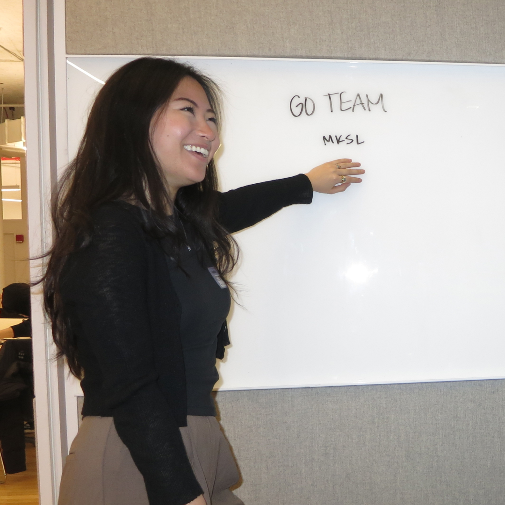
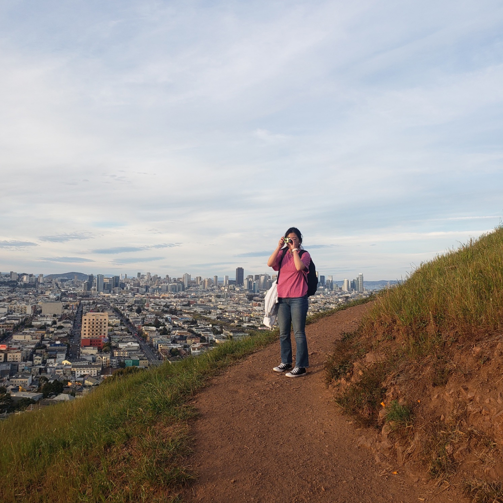

Hi there! I'm a Product Designer based in New York drawn to ambiguous problems and early-stage ideas, where good design isn't just the interface but the decisions behind it. A lot of my work sits at the intersection of product and systems thinking, balancing competing constraints to create something that actually holds up.
Here are the projects I hard-coded in Typography & Interaction ('25–'26) at The New School using HTML, CSS, and JavaScript while pursuing my Masters in Communication Design.
Outside of design, I'm usually making my way through my Letterboxd watchlist, walking around the city with friends, or trying a new spot on Beli.
I'm looking for thoughtful product teams building ambitious tools with real cultural or behavioral impact. Feel free to reach out!



